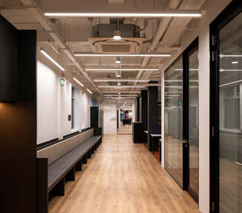
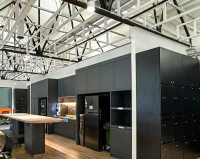

The building at 21 Keppel Road had stood for over a century before anyone asked it to house an innovation hub. Originally constructed as the Customs Operations Command, an administrative and operational hub linked to Singapore’s port and maritime trade, it carried the weight of colonial-era civic architecture. Restrained, functional, symbolic. Not designed for EV charging stations or open-plan workspaces or façade lighting synced to the energy of the teams inside.


The project was initiated as a full refurbishment with the aim of transforming the asset into a contemporary workplace aligned with BeyondX’s innovation-led ethos.
Mint was appointed at concept stage, shortly after the architectural layout plans were presented to stakeholders and approved in principle. Under an early contractor involvement arrangement, Mint provided technical input to support design development before it was fixed.
Initial works focused on comprehensive pre-condition surveys of the main incoming services, power, water and drainage, to confirm available capacity, assess suitability for reuse and identify compliance requirements. In parallel, detailed internal surveys mapped the existing structure and spatial constraints, informing equipment placement, floor-to-ceiling allowances and routing ahead of detailed design.